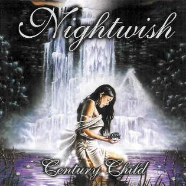
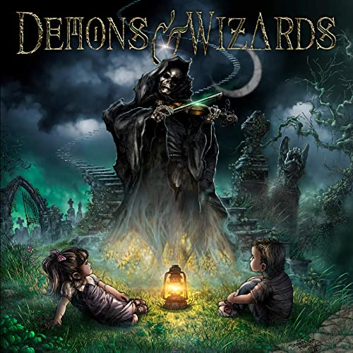

About this Page
Hello, this is my page about the music bands I like. Most of them are metal. I've liked these bands for several years since middle-school. I hope you give some of their songs a chance!
Favorite Songs
Bellow you will find a list with my favorite songs from said bands and their respective album. You can also listen to them on Youtube in the provided link (will open in a new tab)
| Album | Band | Song | |
|---|---|---|---|
 |
Silence | Sonata Arctica | San Sebastian |
|  | Century Child | Nigthwish | Ever Dream |
|  | Demons & Wizards | Demons & Wizards | Fiddler on the Green |
 |
Stadium Arcadium | Red Hot Chili Peppers | Snow |